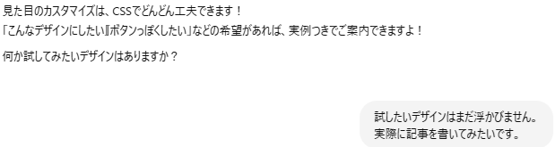

カテゴリ:ブログ作成～公開まで～
投稿日：2025年5月6日
前回は無事にブログのトップページ（index.html）を作って「わーい、文字出た！」ってところまで進みました。
でもそのままだと、まるで“白い画用紙に黒ペンで書いたタイトル”みたいな地味さ。
今回は、そんな地味ブログをちょっとオシャレにしてくれる「style.css」を作ります！
新しいファイルを作成するときはVSCの画面の赤い〇の部分をクリックします。
すると下部に入力する欄が出てくるので、style.cssと入力。
するとmy-blogフォルダにstyle.cssを作成してくれます。便利！
CSSファイル作成の手順もChat GPTに聞いちゃいましょう。
するとHTMLのとき同様、サンプルと説明までしてくれます。
教えてもらった通りにCSSファイルに打ち込みます。
スタイル適用前が↓

適用後が↓

・・・
なんか変わった・・・？
とりあえずChat GPTが次の提案を出してくれているので、それを実施してみよう。

何やらリンクの色を変更したりマウスカーソルを合わせたとき（ホバーというらしい）の動きも変えられるらしい！

マウスを乗せたときに色が変わるらしい。たしかに良く見るかも！
言われた通りに入力してみると・・・

おー！！！変わったー！！今やっている事が目に見えて変わってくるので面白い！！
この時点でデザインの方向性が決まっていれば、Chat GPTに伝えることでどんどん変えていけそうですね！
私は今のところデザインの方向性は決まっていないのでCSSは一旦ここまでにしておきます。
無事トップページのスタイルも変更できたので今回はここまで。
次回は実際に記事を書いてみます。
カテゴリ:ブログ作成～公開まで～